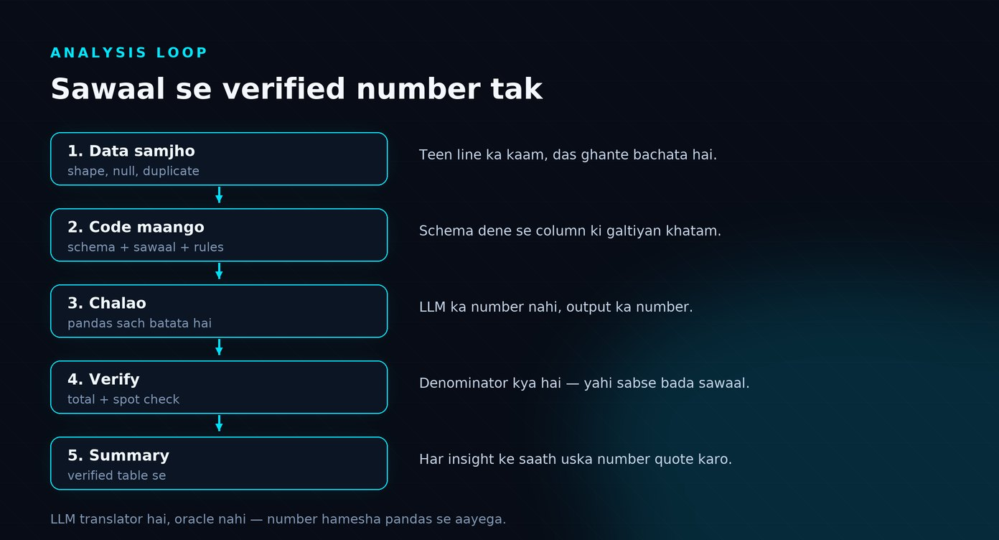
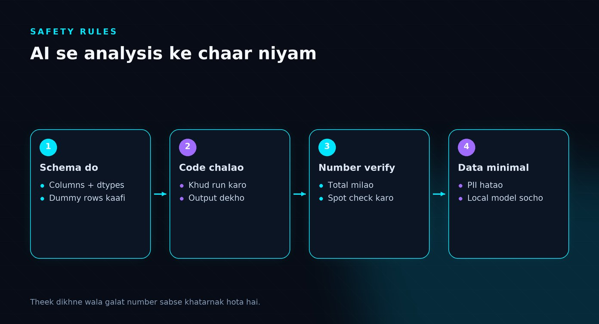

Pandas + LLM se Data Analysis: Practical Workflow Guide
Excel se aage badhne ke baad har analyst ke paas ek hi shikayat hoti hai: “pandas me sab kuch likhna padta hai, yaad nahi rehta.” Aur ab AI aane ke baad ulti shikayat bhi sunne ko milti hai: “AI se toh sab ho jata hai, phir pandas kyun seekhein?” Dono baatein aadhi sach hain. LLM aapko code likh kar deta hai, par woh code chalata nahi, data ka shape nahi jaanta, aur numbers ka zimmewar nahi hota. Pandas numbers ka zimmewar hai. Isliye dono ka kaam alag hai — aur yahi is guide ka poora point hai.
Main dikhaunga ki ek asli CSV se kaam ka analysis kaise nikalta hai: pehle data ko samajhna, phir pandas se sawaalon ke jawab nikalna, LLM ko sirf code likhne aur summary banane me lagana, har number ko verify karna, aur aakhir me ek report banana jo kisi meeting me dikhai ja sake. Beech me woh galtiyan bhi batunga jo maine khud ki, kyunki wahi sabse zyada yaad rehti hain.
Chhota jawab: Data analysis me LLM ko translator samjho, oracle nahi. Aap business sawaal Hinglish me likhte hain, LLM use pandas code me badalta hai, aap code chalate hain, output ko haath se check karte hain, aur phir LLM se us output ki summary likhwate hain. Number kabhi LLM ke dimaag se nahi — pandas ke output se aana chahiye.
LLM kahan kaam aata hai aur kahan nahi
Sabse pehle hadd saaf kar lein. LLM in kaam me bahut achha hai: column names dekh kar schema samajhna, pandas code likhna, error message padhkar fix suggest karna, messy text ko categories me baantna, aur numbers ki summary ko plain language me likhna. Yeh sab “language” ka kaam hai, aur wahan model strong hai.
LLM in kaam me khatarnak hai: exact numbers yaad rakhna, bade CSV ka total batana, do files ka join apne dimaag me karna, aur “is data me kya interesting hai” ka aisa jawab dena jo data dekhe bina bana ho. Model ne aapki file nahi dekhi hoti — usne sirf woh dekha hai jo aapne prompt me chipkaya. Isliye “mere data me kitne customers hain” poochhne par woh confident number bana sakta hai, aur woh number galat hoga.
Ek simple niyam jo maine apne workflow me daala: LLM kabhi number ka source nahi hoga. Har number pandas ke print se aayega, aur uske saath ek chhoti line hogi ki woh kis code se aaya. Report me bhi wahi line rahegi. Isse do fayde hain — galti pakadna aasan hota hai, aur doosre din wahi analysis dobara chalana mumkin hota hai.
Workflow ke chaar step
Har analysis, chahe woh chhoti ho ya badi, inhi chaar step se guzarti hai. Isse skip karna hi sabse aam galti hai — log seedha “chart banao” par kood jate hain aur baad me pata chalta hai ki data me duplicate rows thi.

- Data samjho. Shape, columns, dtypes, missing values, duplicates, aur har numeric column ka min/max. Yeh 10 line ka kaam aage ke 10 ghante bachata hai.
- Sawaal ko code me badlo. Business sawaal likho, phir LLM se pandas code maango. Code padho — kya woh wahi cheez kar raha hai jo aapne poochha.
- Chalao aur verify karo. Output ka total, row count aur ek-do known values haath se check karo. Cross-check ke liye ek doosra tareeka use karo (jaise SQL me wahi query).
- Summary likho. LLM ko sirf verified output do aur usse 3–5 line ki summary maango. Woh summary report me jayegi, number nahi badlega.
Is loop ka sabse underrated hissa step 1 hai. Maine ek baar 40,000 rows ka sales data analysis kiya aur do din baad pata chala ki usme 6,000 duplicate rows thi — kyunki export tool ne retry par same order dobara bheja tha. Do din ka analysis phenkna pada. Aaj main har file par pehle teen line likhta hoon: `df.shape`, `df.duplicated().sum()`, aur `df.isna().sum()`. Teen second ka kaam hai.
Pandas basics jo 80% kaam kar dete hain
Pandas me sau functions hain, par rozmarra ke analysis me chhah cheezein hi 80% kaam kar deti hain. Inhe theek se jaan lo, baaki Google se mil jayega. Neeche wahi chhah, chhote examples ke saath:
import pandas as pd
df = pd.read_csv("orders.csv", parse_dates=["order_date"])
# 1. Filter — sirf wahi rows jo sawaal ke liye chahiye
paid = df[df["status"] == "paid"]
# 2. Group + aggregate — har city ka revenue
city = paid.groupby("city")["amount"].agg(["sum", "count", "mean"])
# 3. Pivot — mahine x city ka table
monthly = paid.pivot_table(index="order_date", columns="city",
values="amount", aggfunc="sum", fill_value=0)
# 4. Merge — do files ko key par jodo
customers = pd.read_csv("customers.csv")
joined = paid.merge(customers, on="customer_id", how="left",
validate="many_to_one")
# 5. Date se period — mahina nikaalo
paid = paid.assign(month=paid["order_date"].dt.to_period("M"))
# 6. Sort + top N
top = city.sort_values("sum", ascending=False).head(10)Do cheezein jo shuru me hi seekh lein. Pehli — `groupby` ke baad `agg` me list do, kyunki ek hi group par sum, count aur mean teeno chahiye hote hain, aur teen alag lines likhna galti ka mauka badhata hai. Doosri — `merge` me `validate="many_to_one"` daalo. Yeh pandas ko batata hai ki right side ki key unique honi chahiye; agar nahi hai to woh error dega, warna aapka data chupchap double ho jayega. Yeh ek argument maine ek baar 3x revenue ka galat number pakadne me use kiya tha.
Agar aap SQL se aaye hain to pandas ka mental model simple hai: filter = WHERE, groupby = GROUP BY, merge = JOIN, pivot_table = PIVOT. Isi wajah se SQL seekhna pandas se pehle faydemand hai — SQL basics wala guide padh lein agar yeh hissa naya lag raha hai.
LLM se code likhwana — prompt kaise dein
“Mere data ka analysis karo” jaisa prompt bekaar hai. Achha prompt woh hai jisme schema, sawaal aur output ka shape teeno hon. Model ko schema dena sabse zaroori hai, kyunki 90% galat code column names ke andaaze se aata hai.
Yeh mere DataFrame ka schema hai (df):
order_id (int), customer_id (int), order_date (datetime),
city (str), category (str), amount (float), status (str),
discount (float, 0-1), is_returned (bool)
Sawaal: Har city ka net revenue nikalo — sirf paid orders,
returns hata kar, aur discount ke baad. Top 10 city, descending.
Rules:
- Sirf pandas use karo, naya package nahi.
- Ek hi code block do, comments Hinglish me.
- End me print karo: total revenue, row count, aur top city.
- Koi bhi number apne se mat likho — sirf code do.Is prompt me teen cheezein kaam kar rahi hain. Schema se column names fix ho jate hain. “Returns hata kar, discount ke baad” se business logic code me aa jata hai, warna model simple sum kar deta hai. Aur “sirf code do, number mat likho” se model ke dimaag se bane hue numbers prompt se bahar reh jate hain.
Code aane ke baad usse padhna zaroori hai. Teen sawaal khud se poochho: filter sahi hai? discount ka treatment wahi hai jo finance team maanti hai? aur groupby ke baad koi row drop to nahi ho rahi (jaise NaN city wale orders)? Yeh teen sawaal aadhi galtiyan pakad lete hain. Agar code me kuch samajh na aaye to LLM se line-by-line explanation maango — par explanation ko sach maan kar aage mat badho, code chala kar output dekhо.
Numbers ka verification — sabse zaroori step
Yeh section poore post ka sabse important hai. AI se analysis karte waqt sabse bada khatra galat code nahi hota — woh hota hai theek dikhne wala galat number. Ek chart sundar dikhta hai, summary convincing lagti hai, aur meeting me koi poochhta nahi ki yeh 18% kahan se aaya.
Mera verification routine teen level ka hai. Pehla — row count match: filter ke pehle aur baad ka count dekho, aur samjho ki kitni rows kyun gayi. Doosra — total match: ek independent source (raw CSV ka Excel total, ya SQL query) se gross total milao. Teesra — spot check: ek city ya ek mahine ka number haath se nikaalo aur compare karo.

Ek chhoti trick jo bahut kaam aati hai: LLM ko code likhwane ke baad wahi sawaal SQL me bhi likhwao aur dono ka total milao. Agar pandas 12,84,300 aur SQL 12,84,300 deta hai, to code sahi hone ke chance bahut zyada hain. Agar farq hai, to farq ka kaaran dhoondhna hi asli analysis hai — aksar wahan duplicate, null ya timezone ka issue nikalta hai.
Privacy ka bhi ek rule: asli customer data kabhi public LLM me mat daalo. Schema aur 5 dummy rows kaafi hain code likhwane ke liye. Agar poora data chahiye, to local model ya company ka approved endpoint use karo, aur PII columns pehle hata do. Yeh boring lagta hai jab tak ek baar data leak ki khabar na padhni pade.
Text data ko LLM se categorize karna
Pandas ka ek kamzor hissa unstructured text hai. 5,000 support tickets ko “billing”, “delivery”, “product” me baantna pandas se mushkil hai, par LLM se aasan. Pattern yeh hai: har ticket ka text LLM ko bhejo, ek fixed list me se label maango, aur output ko wapas DataFrame me jodo. Phir baaki analysis pandas se karo.
labels = ["billing", "delivery", "product", "account", "other"]
def classify(text):
resp = client.chat.completions.create(
model="gpt-4.1-mini",
temperature=0,
messages=[
{"role": "system", "content":
"Ticket ko in labels me se ek me rakho: " + ", ".join(labels) +
". Sirf label ka naam likho, kuch aur nahi."},
{"role": "user", "content": text[:1500]},
],
)
return resp.choices[0].message.content.strip().lower()
tickets["label"] = tickets["text"].apply(classify)
print(tickets["label"].value_counts())Isme teen practical baatein. Pehli — `temperature=0` rakho, warna same ticket do baar chalane par alag label mil sakta hai. Doosri — label list prompt me do aur output ko validate karo; agar model ne list se bahar ka jawab diya to usse “other” me daalo. Teesri — 100 tickets par pehle test karo aur hand-label se milao. 85% se upar match ho to aage badho, warna label definitions saaf karo.
Cost ka andaza: 5,000 tickets, har ek ~300 tokens, chhote model par — yeh kuch dollar ka kaam hai. Par 50,000 tickets par yeh badh jata hai, isliye sample lekar pehle accuracy naapo, phir poora data chalao. Aur haan, jo bhi LLM se label aaya hai use ek column me “ai_label” hi rakho, taaki baad me pata rahe ki woh insaan ka faisla nahi tha.
Report aur chart — analysis ko dikhane layak banana
Analysis ka aakhri 10% sabse zyada ignore hota hai: report. Ek achhi report me teen cheezein hoti hain — ek sawaal, ek jawab, aur ek number jo us jawab ko support kare. Baaki sab decoration hai. Maine bahut si reports dekhi hain jisme 12 charts the aur koi bhi yeh nahi bata raha tha ki decision kya lena hai.
Charts ke liye pandas ke saath matplotlib ya seaborn kaafi hai. Do rules: ek chart me ek message, aur axis par units likho. “Revenue” ki jagah “Revenue (₹ lakh)” likhna chhota badlav hai par confusion khatam kar deta hai. Time series me date ko string ki jagah datetime rakho, warna line chart alphabetic order me lag jayega — yeh galti har naye analyst se hoti hai.
Summary likhwane ka tarika: LLM ko sirf verified table do, apna conclusion pehle se mat do. Prompt me likho “in numbers se 3 insights likho, har insight ke saath woh number quote karo jisse woh aaya, aur jo cheez data me nahi hai uske baare me mat likho.” Isse summary me har claim ke saath uska number aata hai, aur aap turant pakad sakte hain ki koi line bina data ki hai ya nahi.
Mera anubhav
Ek baar mujhe ek D2C brand ke liye “kaun se products return ho rahe hain” ka analysis karna tha. Maine LLM se seedha code maanga, woh `groupby("product")` wala code de diya, chart bana diya, aur top product ka return rate 34% dikha. Meeting me sab hairan the — woh product sabse zyada bikne wala tha. Kisi ne poochha, “return rate kis base par?” Nikla ki code ne returns ko total orders se divide kiya tha, par us product ke kai orders cancel the aur cancel wale returns me nahi aate. Sahi base sirf delivered orders tha. Number 34% se 9% par aa gaya.
Us din ke baad maine apne har analysis me ek line jodi: “denominator kya hai?” Har rate, har percentage ke liye. LLM se code likhwana aasan hai, par business definition sahi chunna woh kaam hai jo sirf insaan kar sakta hai. Aaj main prompt me hi likh deta hoon — “base sirf delivered orders, cancelled aur pending hata do” — aur code usi hisaab se aata hai.
Doosri sikh speed ki thi. Pehle main har naye dataset par 2 ghante explore karta tha. Ab main 15 minute me ek “data card” banata hoon — shape, missing, duplicates, date range, top categories — aur usse LLM ko deta hoon. Phir sawaal poochhna shuru karta hoon. Isse analysis tez hui, par zyada zaroori baat yeh hui ki galtiyan shuru me hi pakdi jaati hain, jab unhe theek karna sasta hota hai.
Nateeja
Pandas aur LLM ek doosre ke competition nahi, jodi hain. Pandas sach batata hai — kitni rows, kitna total, kaun sa group. LLM language ka kaam karta hai — schema samajhna, code likhna, error fix karna, summary banana. Aap kaam karte hain verification ka: denominator, filter aur base sahi hai ya nahi.
Aaj hi shuru karna ho to ek chhota path lein: koi bhi public CSV lo, `df.shape`, `df.isna().sum()` aur `df.duplicated().sum()` chalao, phir ek business sawaal likho aur LLM se uska pandas code maango. Code chalao, total haath se check karo, aur 3 line ki summary likho. Yeh ek exercise aapko 20 tutorials se zyada sikhayegi — kyunki isme aap khud woh galti karenge jo har analyst karta hai.
Aage padhein: prompt engineering guide — LLM se code aur summary maangne ka structure; aur Excel formulas guide — jab data chhota ho aur pandas ki zaroorat na pade.
अक्सर पूछे जाने वाले सवाल
Kya LLM se poora analysis ho sakta hai?
Nahi. LLM code aur summary de sakta hai, par data chalana, verify karna aur business definition tay karna insaan ka kaam hai. Bina verification ke number galat aane ka khatra rehta hai.
Pandas seekhna zaroori hai agar AI hai?
Haan, kam se kam basics. LLM ka code padhne, chalane aur debug karne ke liye pandas ka mental model chahiye — warna galti pakadna mushkil ho jata hai.
Bade data par pandas slow ho jata hai, kya karein?
Pehle dtype theek karo aur sirf zaroori columns padho. 10 lakh se zyada rows par Polars ya DuckDB try karein, ya SQL me aggregate karke chhota result pandas me laayein.
LLM ko apna data bhejna safe hai?
Schema aur dummy rows bhejna safe hai. Asli customer data PII ke saath public model par mat bhejein — columns hatao ya company ke approved endpoint ya local model ka use karein.
Report me kaun se charts rakhein?
Ek chart, ek message. Trend ke liye line, comparison ke liye bar, distribution ke liye histogram. 12 charts ki jagah 3 saaf charts zyada asar karte hain.